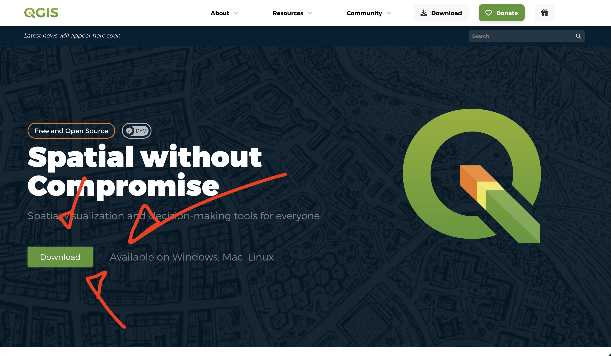
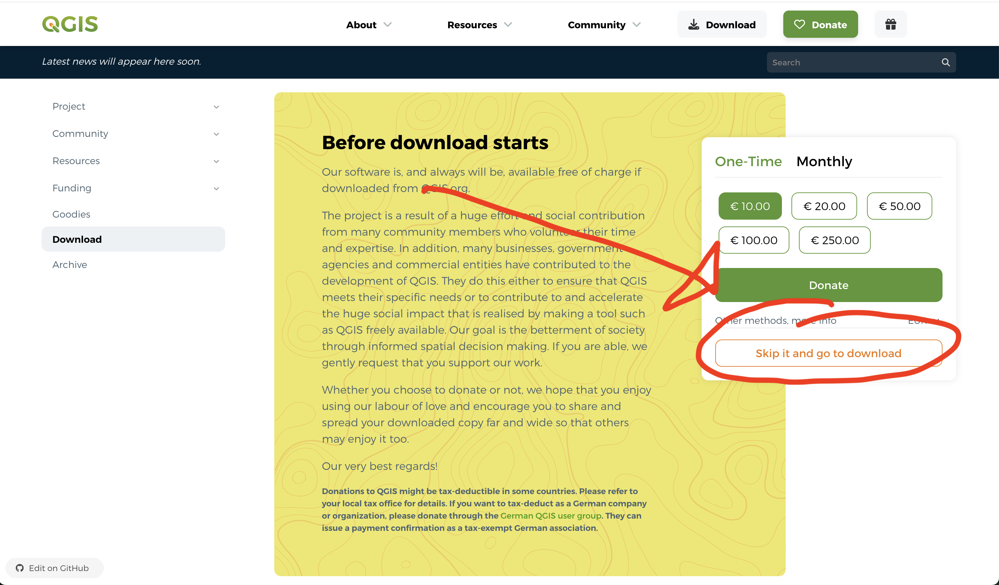
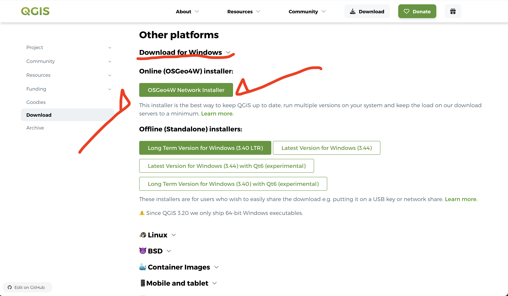
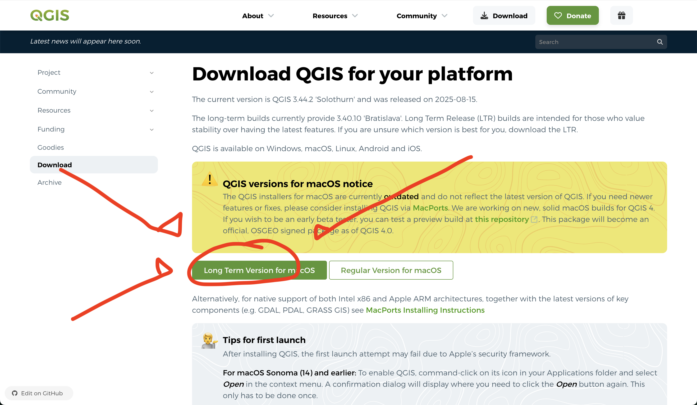
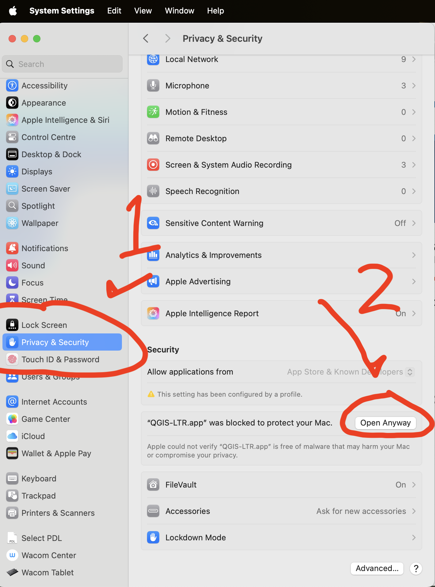
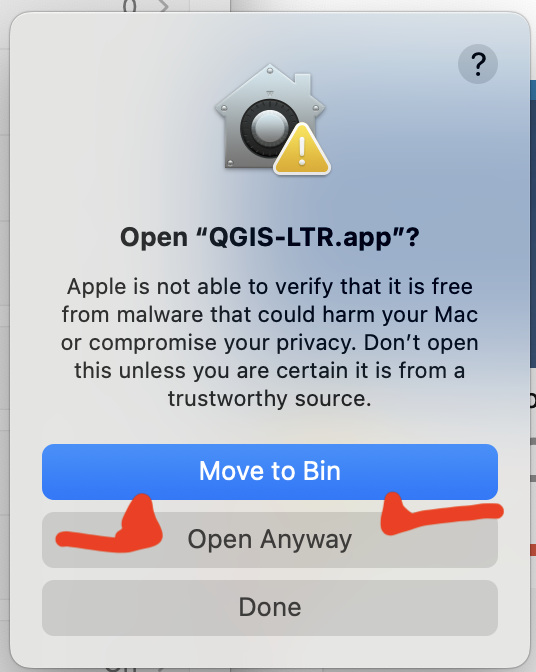

QGIS
Installing QGIS
Installing QGIS varies slightly depending what system you are running. Either way you need to go to QGIS.org.


Windows

MacOS

Depending on what permissions you have on your system you may also need to unlock QGIS in your security permissions.


Linux
If you use linux I’m going to assume you can figure this out on your own! (It might also be better for you to not use the LTR version of QGIS).
Tutorials and resources
QGIS is an extremely powerful and complex piece of software. While I will be providing some walkthroughs of how to accomplish some mapping tasks each week, it would be impossible for me to cover everything that QGIS has to offer, and every challenge you might encounter in such a short amount of time. Luckily, there are many excellent resources that you can turn to find out how exactly to do the task you have in mind. I’ve picked a few of what I think are the best resources below. These are by no means exhaustive, and a quick search may also take your answer and other resources that I have missed.
Map Academy
Map Academy is a youtube channel run by Prof Alasdair Rae the former Professor of Urban Studies and Planning at Sheffield University. He is a leading expert in QGIS and his videos are short, well made, and cover most things you might want to do in QGIS - from the simple to the complicated. He also has a collection of handy datasets and his old blog is also well worth a look.
Other Youtube Channels
Klas Karlsson has long form videos that can be very useful for covering some more esoteric topics and layout issues in QGIS.
Hans Vander Kwast a Geographer at IHE Delft has lots of handy videos, althought they are more targeted towards hyrdrologists and physical geographers.
The Offical QGIS Channel has changelog videos showcase the latest features that have been added to QGIS and presentations/lectures which showcase some of the cutting edge work that is being done with QGIS.
Beyond this I would just search for what you are looking for, there are hundreds of small channels that have QGIS videos tutorials for almost every issue or feature in QGIS!
Textbooks
If you are interested in textbooks for QGIS, there are a many available. I have not set any as core readings for this course as I tend to find that they are variable in the quality with which they cover topics and that they tend to be extremely long winded and not particularly suited to the task of learning software like QGIS.
Locate Press tends to have the most well written and uptodate textbooks on QGIS, however as a result of their DRM free publishing model they are not accessible through the library. Although this means that slightly older versions of many of these books are uploaded by their authors and can be found for free with a quick google search.
The library provides access to several books from Packt Publishing which can be useful for refernce, such as: